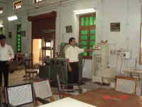
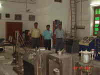
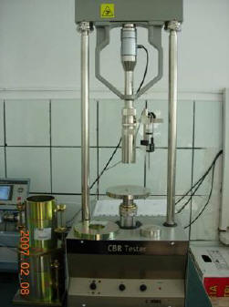
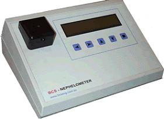
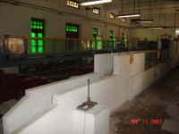
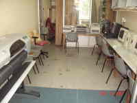
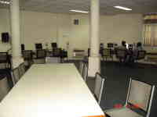
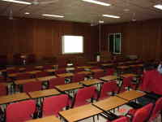
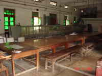
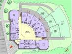

This Lab helps in
training engineers and architects
in different areas related to
Construction Technology,
Construction Management,
Functional Design of Buildings and
Building Materials. The course is
designed such that the students
are exposed to the latest and
appropriate techniques in these
areas.This laboratory is equipped
with the following equipment: Universal
Testing Machine 100 ton capacity,
Universal Testing Machine 200 ton
capacity, Non-destructive test
hammer, Furnace 1200° C, Concrete
core cutter, Pre stressing bed,
Load Frame, Data printer (strain
measuring system), Ultra sonic
tester, Rebar locator, Flexural
testing machine, Resistivity meter
for measuring the rate of
corrosion, Shake Table (Seismic
Analysis Table) etc. The
Structural Engineering Laboratory
has a heavy testing floor and
equipped with necessary facilities
for testing scaled structural
models.

B)
Transportation Engineering Lab

This Lab has
well-equipped laboratories for
pavement materials testing and
traffic engineering studies. These
labs can also boast of some modern
equipment. The latest addition to
the Division is the computing
facility, which houses some of the
very latest equipment.These
facilities not only enhance
teaching, but are also of much value
in the conduct of research and
consultancy services.Equipments such
as Computer driven testing
system, Automatic Pavement
Unevenness Integrator, In-situ
Pavement Sampling and Testing
Equipment, Bitumen Extraction and
Processing Equipment, Materials
Testing Equipment Traffic
Engineering Laboratory, Marshall
Stability Test Equipment with
Digital Display and Graphic
Plotter, etc.
C)
Geotechnical Engineering Lab
Excellent
laboratory facilities exist for
carrying out advanced research in
various areas of Geotechnical
Engineering. The facilities are used
for conducting undergraduate and
post-graduate laboratory classes and
post-graduate research works. It has
facilities such as Mini
pressure meter, Large size direct
shear machine, Soil Properties
Testing Equipments, Creep testing
facilities for geosynthetics, etc.

D)
Environmental Engineering Lab

The
environmental engineering
laboratory has almost all state
of art equipments such as Spectro
photometer, Atomic absorption
spectrometer, total carbon
analyser, US-VIS
spectrophotometer, gas
chromatograph, flue gas
analyser, stack monitoring
kit, phase contrast
microscope, flame photometer,
laminar hood, COD digestor,
overall it is a mobile
Lab.
E)
Hydraulics Lab
This laboratory is
well equipped with table-top
hydraulic models, different types
of flumes,Turbines, Pumps,
Fluorimeter, Hydraulic bench,
Electro magneto meter, facility
for physical model studies,
excellent computational
facilities, towing tank, and open
air physical models, etc.

F)
Surveying and Geoinformatics Lab

This laboratory is
well equipped with:
Remote sensing and Geographical
information system software
(Erdas Imagine, Arc GIS
10.2, IDRISI Tagia, ArcGIS
Engine), AutoCAD Software, DGPS,
Handheld GPS Receivers, Total
Stations, Theodolites, Auto
Levels, Dumpy Levels, Tachoemeter,
Plane Tables, EDM, Stereo Scope, Pentium
i7 PCs on the windows
networking, A0 size Color
Plotter, Color printer and
scanner, Digital
Camera etc.
G)
Computer Lab
The Departmental
Computing Facilitysupports
computing and
programming requirements of the
students with Hardware and Software
maintenance
in the department. LAN connectivity
is also provided. It is housed in a
large
Air Conditioned and well furnished
hall that accommodates 40 Personal
Computers
powered by 25 KVA UPS with
additional service and peripheral
rooms. This
facility is being utilized as an
on-line class room for conducting
computer
based courses such as GIS, computer
application in Civil Engineering and
building drawing etc. Peripherals
such as Laser Printers, Scanners and
Data
Storage facilities are made
available for students and faculty.
A list of hardware
available are: Pentium IV
Personal Computers-40
Systems, HP Scanner 8200, 2 HP
Laser Jet Printers, 1 DMP-80
column- LQ Series,
HP A4 Colour Laser Jet, etc.
A list of softwares
available are: Visual Studio 6.0,
Borland C++, SAP 2000,
STAD PRO 2005, Autodesk(full),
Microsoft Office, etc.

I) Seminar
Room

The Department is
equipped with a fully
air-conditioned seminar hall
installed with multi-media
projection facility and latest
public address system. It can house
about 80 persons in total.
J) Ganga
Laboratory
The Department has
a laboratory that tackles the
problems related to Pollution in
river Ganges, Flood Control and
various other issues related to
river Ganga.

H) R. H.
D Center/ Building Center

The Department has
been making significant contribution
in the field of Cost Effective
Housing using innovative
technologies and materials by way of
giving expertise to all Govt./
Non-Govt Organizations and also
training their technical personnel
involved in this area.
K)
Departmental Library
Apart from the Main
Library, Department also provides
Library Facility to students.